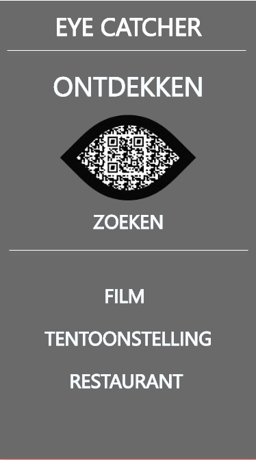
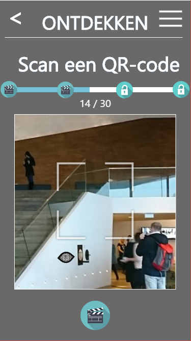
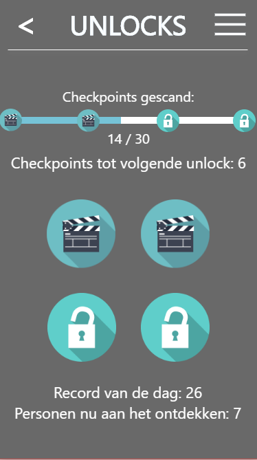
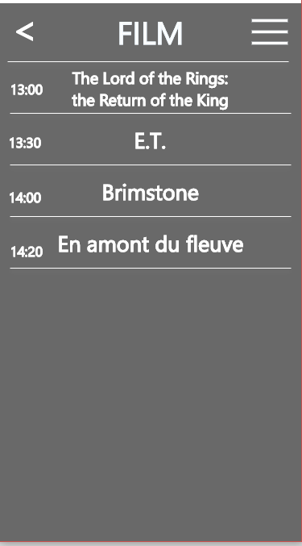

Het Eye museum en filmhuis in Amsterdam heeft ons gevraagd om een mobiele oplossing te bedenken voor een aantal problemen waar de instelling mee kampt. De opdracht was onder te verdelen in 3 problemen. Eye is een mooi gebouw, maar door de architectuur is het gebouw niet al te duidelijk voor zijn bezoekers. Eye kampt er ook mee dat de folders geen up to date informatie kunnen bevatten. Het laatste probleem dat Eye heeft is dat bezoekers vaan niet weten wat er allemaal te doen is in het gebouw.
Om alle probelemen van Eye op te kunnen lossen hebben wij een concept bedacht. Wij willen de bezoekers in Eye hun weg laten vinden door middel van gerichte of ongerichte navigatie. Gerichte navigatie brengt de bezoeker waar hij naartoe wil terwijl ongerichte navigatie , de "ontdekken" functie, de bezoeker in staat stelt om uit te vinden wat er allemaal in de buurt te doen is. Beide functies van de navigatie maken gebruik van 36o graden foto's met daarin pijlen wat er te doen is of waar de bezoeker naar toe moet om op zijn locatie te komen. Om duidelijk te maken wat er allemaal te doen is hebben wij in het hoofdmenu de functies ontdekken,zoeken, film en tentoonstellingen toegevoegd. De applicatie geeft basale informatie over wat er te doen is terwijl het de bezoeker stimuleert om zelf het museum te ontdekken.
Het prototype gebruikt de kleuren schema's van Eye. Om je locatie in het gebouw te bepalen gebruiken wij scanbare QR codes. Als een QR code wordt gescand wordt de bezoeker naar een 360 gradne foto gelinkt.




Klik hier om het prototype te bekijken
Klik hier om het verslag te bekijken